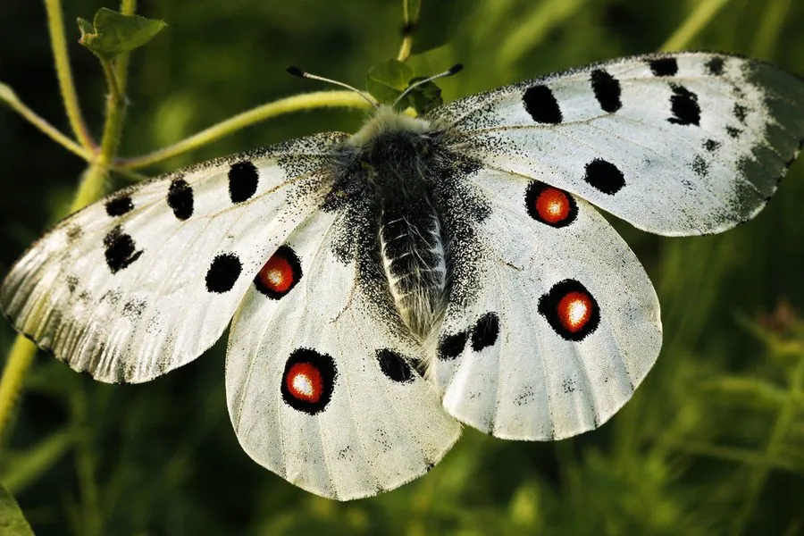

昆虫 · 动物界
阿波罗绢蝶 Parnassius apollo

欧洲山地最著名的绢蝶，翅面乳白并散布黑斑与红色眼斑，飞行缓慢，幼虫专食景天科植物，受国际公约保护。
- 分类
- 门节肢动物门纲昆虫纲目鳞翅目科凤蝶科属绢蝶属
- 栖息环境
- 海拔数百米至两千米的岩石草坡、山地草甸和林缘
- 地理分布
- 欧洲山地自西班牙至巴尔干、中欧与斯堪的纳维亚南部，亦见西亚和高加索
- 保护级别
- 列入《濒危野生动植物种国际贸易公约》附录二，欧洲多国立法保护
物种志
阿波罗绢蝶的翅展约六至八厘米，翅面乳白色而半透明，前翅散布大小不等的黑斑，后翅有醒目的红色眼斑，眼斑中央带白心、边缘镶黑，翅缘的黑色带纹浓淡不一。它的身体粗壮，密被灰白色绒毛，触角呈棒状，雌蝶腹部肥大，产的卵是乳白色的圆粒。不同地区的个体在斑纹大小和底色深浅上差异明显，形成许多地理亚种。
它分布于欧洲山地，从西班牙、法国、意大利到巴尔干、中欧山地和斯堪的纳维亚南部，也见于西亚和高加索，栖息在海拔数百米至两千米的岩石草坡、山地草甸和林缘，喜在阳光充足处访花。幼虫以景天科植物为食，尤其偏爱长生草和景天，卵产在寄主叶片或附近石缝中，以卵越冬，翌年春季孵化，化蛹于石缝或落叶间，一年一代。它被列入《濒危野生动植物种国际贸易公约》附录二，欧洲多国立法保护，栖息地退缩与过度采集是主要威胁。
形态与习性
- 翅展约六至八厘米，翅面乳白半透明
- 斑纹前翅散黑斑，后翅具红色眼斑
- 食性幼虫专食景天科的长生草与景天
- 亚种各地斑纹差异大，形成许多地理亚种
- 保护列入国际公约附录二，欧洲多国立法保护
- 习性飞行缓慢，喜在阳光下的花上吸蜜
趣味知识
- 阿波罗绢蝶因翅上醒目的红斑而闻名，是欧洲昆虫保护的标志性物种。
- 它的幼虫只吃景天科植物，寄主一少，整片栖息地就会失去种群。
- 成虫飞得又慢又低，过去常被大量捕捉，如今受国际公约严格管制。